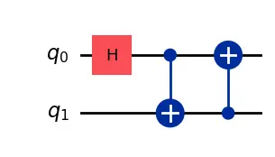

Quantum gates
Now that we know how our states might look like
\[ |\phi\rangle = \left[ \begin{array}{c} \alpha \\ \beta \end{array} \right] \]
would be relevant to understand how we can operate on them. Quantum computers, like classical computers, use logical gates to do their work. In this case, gates are operations that take our initial state and convert it into a different quantum state. Classical regime is poor in this sense as allowed changes are only between 0 and 1, but quantum states and qubits allow for much more information to be represented. That makes quantum logical gates also more complex and rich.
\[ U|\psi\rangle \rightarrow |\phi\rangle \]
But in this case, these gates are specific to the quantum regime. We will find some similarities like in the case of the not gate and some particular cases like the Hadamard gate.
A quantum gate is a frame to describe the quantum process taking a quantum state at time \(t\) to the one at \(t+1\). For a closed quantum system the operator that describes the evolution of the system can be described with \(e^{-i\int H dt/\hbar}\), which is a unitary operator based on the Hamiltonian that describes the dynamics of the system. What is a Hamiltonian you ask? Well, this video may be of interest then:
Just take into account that, if we ignore the global phase of the quantum state, we can suppose all the quantum gates to be special unitary operations, i.e., the determinant of them is 1. This is so that the obtained state falls into the surface of the bloch sphere (otherwise we enter a much more complex territory).
A pure state \(|\psi(t_0)\rangle\) in a Hilbert space \(\mathcal{H}\) can evolve to another state \(|\psi(t)\rangle\) given by the time evolution operator \(U(t,t_0)\)
\[ |\psi(t)\rangle = U(t,t_0)|\psi(t_0)\rangle \]
where \(U(t,t_0)\) is the unitary transformation on the initial state of a closed system (with special case \(U(t_0,t_0)=I\)). The time evolution is governed by the Schrödinger equation - yes, the one with the cat -
\[ i\frac{d}{dt}|\psi(t)\rangle = \hat{H}|\psi(t)\rangle \rightarrow |\psi(t)\rangle = e^{-i\hat{H}t}|\psi(0)\rangle \]
here \(\hat{H}\) is a self adjoint operator also known as the Hamiltonian. \(\hat{H}\) is an observable associated to the energy of the system and governs the dynamics of a given state relating to previously mentioned \(U\) as \(U(t) = e^{-(i/\hbar)t\hat{H}}\) following Stone’s theorem.
The Hall of Gates
As in classical computing, some key gates need to be known. The \(NAND\) being an universal boolean logic gate as it can create all the other options required to render boolean logic, we should introduce some of the core gates when talking about quantum computing and the universality of those gates.
NOT-gate (X)
The not gate (\(X\) as the operator gate and \(\sigma_x\) if expressed as a Pauli matrix) is one of the most basic concepts in computing. A classical operation that takes the bit in a position (0 or 1) to its opposite. But, quantum not extends that basic concept to the complexity of the quantum regime. The operator can be represented by a matrix like the following one:
\[ X = \left[ \begin{array}{cc} 0 & 1 \\ 1 & 0 \end{array} \right] \]
Then, the operation \(X|0\rangle = |1\rangle\) can be validated by the simple multiplication of the matrix of the gate by the quantum state:
\[ X|0\rangle = \left[ \begin{array}{cc} 0 & 1 \\ 1 & 0 \end{array} \right]\left[ \begin{array}{c} 1 \\ 0 \end{array} \right] = \left[ \begin{array}{c} 0 \\ 1 \end{array} \right] = |1\rangle \]
But if we perform this very simple example with the generic case for \(|\psi\rangle\)
\[ X|\psi\rangle = X(\alpha|0\rangle + \beta |1\rangle) = \left[ \begin{array}{cc} 0 & 1 \\ 1 & 0 \end{array} \right]\left[ \begin{array}{c} \alpha \\ \beta \end{array} \right] = \left[ \begin{array}{c} \beta \\ \alpha \end{array} \right] = \beta|0\rangle + \alpha |1\rangle = |\phi\rangle \]
we have basically created a new state where its outcome probabilities have been shifted. Therefore, the \(X\) operation can be used to shift the state ratter than perform a mere coin flipping. This gets more interesting looking at some specific gates like the Hadamard gate.
Hadamard (H)
Its matrix representation is
\[ H = \frac{1}{\sqrt{2}}\left[ \begin{array}{cc} 1 & 1 \\ 1 & -1 \end{array} \right] \]
And its effect…
\[ H|0\rangle = \frac{1}{\sqrt{2}}\left[ \begin{array}{cc} 1 & 1 \\ 1 & -1 \end{array} \right]\left[ \begin{array}{c} 1 \\ 0 \end{array} \right] = \frac{1}{\sqrt{2}}\left[ \begin{array}{c} 1 \\ 1 \end{array} \right] = \frac{1}{\sqrt{2}}|0\rangle + \frac{1}{\sqrt{2}}|1\rangle = |+\rangle \]
basically it allows as to switch the axis of the bloch sphere and work on the superposition of the states on the \(Z\) axis.
Rotating quantum states
In essence, we will see that many gates what they offer us is simply rotations over the three main axes of the bloch sphere:
\[ R_x(\theta) = \left( \begin{array}{cc} \cos(\frac{\theta}{2}) & -i\sin(\frac{\theta}{2}) \\ -i\sin(\frac{\theta}{2}) & \cos(\frac{\theta}{2}) \end{array} \right) \]
\[ R_y(\theta) = \left( \begin{array}{cc} \cos(\frac{\theta}{2}) & -\sin(\frac{\theta}{2}) \\ \sin(\frac{\theta}{2}) & \cos(\frac{\theta}{2}) \end{array} \right) \]
\[ R_z(\theta) = \left( \begin{array}{cc} e^{-i\frac{\theta}{2}} & 0 \\ 0 & e^{i\frac{\theta}{2}} \end{array} \right) \]
making the general case \(R_M(\theta) = \exp^{(−i\theta M/2)}\) where \(M \in \{X,Y,Z\};\) being those three the Pauli gates the Pauli matrices \(\sigma_x, \sigma_y \text{ and } \sigma_z\). Actually the literature will quote a more generic case which will be given by the following gate operator
\[ U(\theta, \phi, \lambda) = \left( \begin{array}{cc} \cos(\frac{\theta}{2}) & -e^{i\lambda}\sin(\frac{\theta}{2})\\ e^{i\phi}\sin(\frac{\theta}{2}) & e^{i(\phi+\lambda)}\cos(\frac{\theta}{2}) \end{array} \right) \]
which maps to previous gates following the relationship \(U(\theta,0,0) = R_y(\theta)\), \(U(0,0,\lambda) = R_z(\lambda)\) and \(U(\theta,-\frac{\pi}{2},\frac{\pi}{2}) = R_x(\theta)\)
Native gates
Quantum Computing is a mathematical framework that allows for all kind of gates to be designed but in many cases depending on the manufacturer of the device the set of gates we can use may differ. We will need to find the combination of gates that will produce our desired action by using the gates each device is equipped with. Also called native gates.
The native gate set is the gate set, one and two-qubit gates, that should be used to translate any theoretical operator or action from the mathematical framework to be physical action that can be performed, decomposing the original action into different operations or better expressed, transpiling the circuit.
Actually, two of the most basic gates, the Hadamard and CNOT gate, do not exist. We always need to find translations for those fundamental operations when dealing with hardware.

\(H\) represents the Hadamard gate and the other two blue ones, the Control-NOT gate as the basis for generating entangled states.
No device can implement natively at least to the best of our knowledge. Therefore, in order to apply that gate own needs to apply native gates that produce the same action or unitary matrix.
What can run on IBM devices if we convert it to
We will see this in more detail later when we review hardware providers and their actual implementation.
Multi-qubit systems
We have explored what a single qubit quantum state may look like and how to operate on it using quantum gates. Now, let’s scale up our system by adding more qubits. The composition of a quantum system with more than qubits will render a quantum state that is obtained after performing the tensor product - or Kronecker product - of its units.
\[ |0\rangle \otimes |0\rangle = \left[ \begin{array}{c} 1 \\ 0 \end{array} \right] \otimes \left[ \begin{array}{c} 1 \\ 0 \end{array} \right] = \left[ \begin{array}{c} 1 \times \left[ \begin{array}{c} 1 \\ 0 \end{array} \right] \\ 0 \times \left[ \begin{array}{c} 1 \\ 0 \end{array} \right] \end{array} \right] = \left[ \begin{array}{c} 1 \\ 0 \\ 0 \\ 0 \end{array} \right] = |00\rangle \]
Therefore, to operate with those systems our gates will need to scale up as well. Identity matrix (\(I\)) will become our ally so that we can compose gates the operate in que same quantum system regime.
\[ I \otimes X = \left[ \begin{array}{c} 1 & 0\\ 0 & 1 \end{array} \right] \otimes \left[ \begin{array}{c} 0 & 1\\ 1 & 0 \end{array} \right] = \left[ \begin{array}{cc} 1 \times \left[\begin{array}{c} 0 & 1\\ 1 & 0 \end{array}\right] & 0 \times \left[\begin{array}{c} 0 & 1\\ 1 & 0 \end{array}\right] \\ 0 \times \left[\begin{array}{c} 0 & 1\\ 1 & 0 \end{array}\right] & 1 \times \left[\begin{array}{c} 0 & 1\\ 1 & 0 \end{array}\right] \end{array} \right] = \left[ \begin{array}{cccc} 0 & 1 & 0 & 0 \\ 1 & 0 & 0 & 0 \\ 0 & 0 & 0 & 1 \\ 0 & 0 & 1 & 0 \\ \end{array} \right] \]
Now we should just need to create the product between the quantum state and the operation to understand the effect of it.
\[ (I \otimes X)|00\rangle = \left[ \begin{array}{cccc} 0 & 1 & 0 & 0 \\ 1 & 0 & 0 & 0 \\ 0 & 0 & 0 & 1 \\ 0 & 0 & 1 & 0 \\ \end{array} \right]\left[ \begin{array}{c} 1 \\ 0 \\ 0 \\ 0 \end{array} \right] = \left[ \begin{array}{c} 0 \\ 1 \\ 0 \\ 0 \end{array} \right] = |01\rangle \]
Control-NOT (CNOT)
One interesting gate to be implemented in this regime is the control not or CNOT gate. This acts on the target qubit only if the first qubit is at \(|1\rangle\) state. It does not require any classical measurement or observation, meaning the control qubit still holds its quantumness after gate operation. This is critical to the good functioning of the system otherwise any classical action would affect the quantum state making it purely classical.
\[ CNOT|00\rangle = \left[ \begin{array}{cccc} 1 & 0 & 0 & 0 \\ 0 & 1 & 0 & 0 \\ 0 & 0 & 0 & 1 \\ 0 & 0 & 1 & 0 \\ \end{array} \right]\left[ \begin{array}{c} 1 \\ 0 \\ 0 \\ 0 \end{array} \right] = \left[ \begin{array}{c} 1 \\ 0 \\ 0 \\ 0 \end{array} \right] = |00\rangle \]
\[ CNOT|10\rangle = \left[ \begin{array}{cccc} 1 & 0 & 0 & 0 \\ 0 & 1 & 0 & 0 \\ 0 & 0 & 0 & 1 \\ 0 & 0 & 1 & 0 \\ \end{array} \right]\left[ \begin{array}{c} 0 \\ 0 \\ 1 \\ 0 \end{array} \right] = \left[ \begin{array}{c} 0 \\ 0 \\ 0 \\ 1 \end{array} \right] = |11\rangle \]
But what does there happen when it gets applied to a superposed state.
\[ CNOT|+0\rangle = \left[ \begin{array}{cccc} 1 & 0 & 0 & 0 \\ 0 & 1 & 0 & 0 \\ 0 & 0 & 0 & 1 \\ 0 & 0 & 1 & 0 \\ \end{array} \right]\left[ \begin{array}{c} \frac{1}{\sqrt{2}} \\ 0 \\ \frac{1}{\sqrt{2}} \\ 0 \end{array} \right] = \left[ \begin{array}{c} \frac{1}{\sqrt{2}} \\ 0 \\ 0 \\ \frac{1}{\sqrt{2}} \end{array} \right] = \frac{1}{\sqrt{2}}(|00\rangle + |11\rangle) \]
Quite interesting. Have you tried decomposing this state into the tensor product of the quantum state of the two qubits?
It is fine, because it is not possible. This is what it is called an entangled state. One particular benefit of this states is that by measuring only one of those qubits we know the value of the second one without any need for measurement. We cannot act on one party without affecting the whole system, but we also know the condition of the other party by observing just one. This is what Einstein called spooky actions at a distance and are critical to the scalability of the quantum algorithms.
Entanglement
Entangled states are critical for some of the quantum algorithms allowing us to outperform (theoretically at least) classical computing. The most basic (and probably best known) entangled states are the Bell states or EPR pairs.
\[ |\Phi^{+}\rangle = \frac{1}{\sqrt{2}}(|00\rangle + |11\rangle) \quad |\Phi^{-}\rangle = \frac{1}{\sqrt{2}}(|00\rangle - |11\rangle) \]
\[ |\Psi^{+}\rangle = \frac{1}{\sqrt{2}}(|01\rangle + |10\rangle) \quad |\Psi^{-}\rangle = \frac{1}{\sqrt{2}}(|10\rangle - |10\rangle) \]
Entangled states are behind some of the key algorithms in communication protocols such as Quantum Teleportation or Superdense coding or behind the post-quantum cryptography proposals, like the Quantum Key Distribution. But they are also relevant for computations as we will see in the following sections.
I know, too much theory. Let’s try to execute some examples to make it more clear.